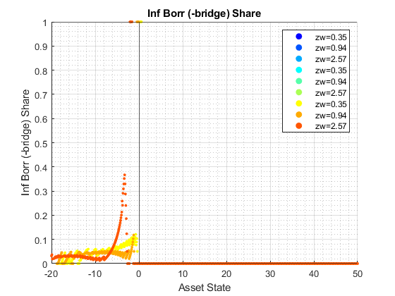
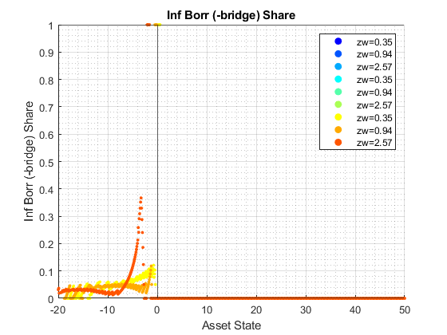

Derive Distributions for For+Inf+Borr+Save One Asset (Wrapper)
back to Fan's Dynamic Assets Repository Table of Content.
Contents
function [result_map] = ff_abz_fibs_ds_wrapper(varargin)
FF_abz_fibs_FIBS_DS_WRAPPER finds the stationary asset distributions
This is a warpper function. Note that abz and abz_fibs will not produce the same results even when formal and informal borrowing rates are the same, because they are solved differently, one where asset is principles only, and the other where asset has both principles as well as interest rates.
Default
- it_subset = 5 is basic invoke quick test
- it_subset = 6 is invoke full test
- it_subset = 7 is profiling invoke
- it_subset = 8 is matlab publish
- it_subset = 9 is invoke operational (only final stats) and coh graph
it_param_set = 8; bl_input_override = true; [param_map, support_map] = ffs_abz_fibs_set_default_param(it_param_set); % Note: param_map and support_map can be adjusted here or outside to override defaults % param_map('it_a_n') = 750; % param_map('it_z_n') = 15; % param_map('fl_r_fsv') = 0.025; % param_map('fl_r_inf') = 0.045; % param_map('fl_r_inf_bridge') = 0.045; % param_map('fl_r_fbr') = 0.035; % param_map('st_analytical_stationary_type') = 'loop'; % param_map('st_analytical_stationary_type') = 'vector'; param_map('st_analytical_stationary_type') = 'eigenvector'; % get armt and func map [armt_map, func_map] = ffs_abz_fibs_get_funcgrid(param_map, support_map, bl_input_override); % 1 for override default_params = {param_map support_map armt_map func_map};
Parse Parameters 1
% if varargin only has param_map and support_map, params_len = length(varargin); [default_params{1:params_len}] = varargin{:}; param_map = [param_map; default_params{1}]; support_map = [support_map; default_params{2}]; if params_len >= 1 && params_len <= 2 % If override param_map, re-generate armt and func if they are not % provided bl_input_override = true; [armt_map, func_map] = ffs_abz_fibs_get_funcgrid(param_map, support_map, bl_input_override); else % Override all armt_map = [armt_map; default_params{3}]; func_map = [func_map; default_params{4}]; end % if profile, profile DP + Dist here support_map('bl_profile_dist') = false; % append function name st_func_name = 'ff_abz_fibs_ds_wrapper'; support_map('st_profile_name_main') = [st_func_name support_map('st_profile_name_main')]; support_map('st_mat_name_main') = [st_func_name support_map('st_mat_name_main')]; support_map('st_img_name_main') = [st_func_name support_map('st_img_name_main')];
Parse Parameters
% param_map params_group = values(param_map, {'st_analytical_stationary_type'}); [st_analytical_stationary_type] = params_group{:}; % support_map params_group = values(support_map, ... {'st_profile_path', 'st_profile_prefix', 'st_profile_name_main', 'st_profile_suffix','bl_time'}); [st_profile_path, st_profile_prefix, st_profile_name_main, st_profile_suffix, bl_time] = params_group{:};
Start Profiler and Timer
Start Profile
if (it_param_set == 7) close all; profile off; profile on; end % Start Timer if (bl_time) tic; end
Solve DP
bl_input_override = true; result_map = ff_abz_fibs_vf_vecsv(param_map, support_map, armt_map, func_map);
----------------------------------------
----------------------------------------
xxxxxxxxxxxxxxxxxxxxxxxxxxxxxxxxxxxxxxxx
xxxxxxxxxxxxxxxxxxxxxxxxxxxxxxxxxxxxxxxx
Begin: Show all key and value pairs from container
CONTAINER NAME: SUPPORT_MAP
----------------------------------------
Map with properties:
Count: 42
KeyType: char
ValueType: any
xxxxxxxxxxxxxxxxxxxxxxxxxxxxxxxxxxxxxxxx
xxxxxxxxxxxxxxxxxxxxxxxxxxxxxxxxxxxxxxxx
----------------------------------------
----------------------------------------
pos = 1 ; key = bl_display ; val = false
pos = 2 ; key = bl_display_dist ; val = false
pos = 3 ; key = bl_display_final ; val = false
pos = 4 ; key = bl_display_final_dist ; val = true
pos = 5 ; key = bl_display_final_dist_detail ; val = true
pos = 6 ; key = bl_display_funcgrids ; val = false
pos = 7 ; key = bl_display_infbridge ; val = false
pos = 8 ; key = bl_display_minccost ; val = false
pos = 9 ; key = bl_graph ; val = true
pos = 10 ; key = bl_graph_coh_t_coh ; val = true
pos = 11 ; key = bl_graph_discrete ; val = true
pos = 12 ; key = bl_graph_forinf_discrete ; val = false
pos = 13 ; key = bl_graph_forinf_pol_lvl ; val = false
pos = 14 ; key = bl_graph_forinf_pol_pct ; val = true
pos = 15 ; key = bl_graph_funcgrids ; val = false
pos = 16 ; key = bl_graph_onebyones ; val = true
pos = 17 ; key = bl_graph_pol_lvl ; val = false
pos = 18 ; key = bl_graph_pol_pct ; val = false
pos = 19 ; key = bl_graph_val ; val = false
pos = 20 ; key = bl_img_save ; val = false
pos = 21 ; key = bl_mat ; val = false
pos = 22 ; key = bl_post ; val = true
pos = 23 ; key = bl_profile ; val = false
pos = 24 ; key = bl_profile_dist ; val = false
pos = 25 ; key = bl_time ; val = false
pos = 26 ; key = it_display_every ; val = 20
pos = 27 ; key = it_display_final_colmax ; val = 12
pos = 28 ; key = it_display_final_rowmax ; val = 100
pos = 29 ; key = st_img_name_main ; val = ff_abz_fibs_vf_vecsvff_abz_fibs_ds_wrapper_default
pos = 30 ; key = st_img_path ; val = C:/Users/fan/CodeDynaAsset//m_fibs//m_abz_solve/img/
pos = 31 ; key = st_img_prefix ; val =
pos = 32 ; key = st_img_suffix ; val = _p8.png
pos = 33 ; key = st_mat_name_main ; val = ff_abz_fibs_vf_vecsvff_abz_fibs_ds_wrapper_default
pos = 34 ; key = st_mat_path ; val = C:/Users/fan/CodeDynaAsset//m_fibs//m_abz_solve/mat/
pos = 35 ; key = st_mat_prefix ; val =
pos = 36 ; key = st_mat_suffix ; val = _p8
pos = 37 ; key = st_matimg_path_root ; val = C:/Users/fan/CodeDynaAsset//m_fibs/
pos = 38 ; key = st_profile_name_main ; val = ff_abz_fibs_vf_vecsvff_abz_fibs_ds_wrapper_default
pos = 39 ; key = st_profile_path ; val = C:/Users/fan/CodeDynaAsset//m_fibs//m_abz_solve/profile/
pos = 40 ; key = st_profile_prefix ; val =
pos = 41 ; key = st_profile_suffix ; val = _p8
pos = 42 ; key = st_title_prefix ; val =
----------------------------------------
xxxxxxxxxxxxxxxxxxxxxxxxxxxxxxxxxxxxxxxx
Scalars in Container and Sizes and Basic Statistics
xxxxxxxxxxxxxxxxxxxxxxxxxxxxxxxxxxxxxxxx
i idx value
__ ___ _____
bl_display 1 1 0
bl_display_dist 2 2 0
bl_display_final 3 3 0
bl_display_final_dist 4 4 1
bl_display_final_dist_detail 5 5 1
bl_display_funcgrids 6 6 0
bl_display_infbridge 7 7 0
bl_display_minccost 8 8 0
bl_graph 9 9 1
bl_graph_coh_t_coh 10 10 1
bl_graph_discrete 11 11 1
bl_graph_forinf_discrete 12 12 0
bl_graph_forinf_pol_lvl 13 13 0
bl_graph_forinf_pol_pct 14 14 1
bl_graph_funcgrids 15 15 0
bl_graph_onebyones 16 16 1
bl_graph_pol_lvl 17 17 0
bl_graph_pol_pct 18 18 0
bl_graph_val 19 19 0
bl_img_save 20 20 0
bl_mat 21 21 0
bl_post 22 22 1
bl_profile 23 23 0
bl_profile_dist 24 24 0
bl_time 25 25 0
it_display_every 26 26 1
it_display_final_colmax 27 27 1
it_display_final_rowmax 28 28 1
----------------------------------------
xxxxxxxxxxxxxxxxxxxxxxxxxxxxxxxxxxxxxxxx
Strings in Container and Sizes and Basic Statistics
xxxxxxxxxxxxxxxxxxxxxxxxxxxxxxxxxxxxxxxx
i idx
__ ___
st_img_name_main 1 29
st_img_path 2 30
st_img_prefix 3 31
st_img_suffix 4 32
st_mat_name_main 5 33
st_mat_path 6 34
st_mat_prefix 7 35
st_mat_suffix 8 36
st_matimg_path_root 9 37
st_profile_name_main 10 38
st_profile_path 11 39
st_profile_prefix 12 40
st_profile_suffix 13 41
st_title_prefix 14 42
----------------------------------------
----------------------------------------
xxxxxxxxxxxxxxxxxxxxxxxxxxxxxxxxxxxxxxxx
xxxxxxxxxxxxxxxxxxxxxxxxxxxxxxxxxxxxxxxx
Begin: Show all key and value pairs from container
CONTAINER NAME: ARMT_MAP
----------------------------------------
Map with properties:
Count: 6
KeyType: char
ValueType: any
xxxxxxxxxxxxxxxxxxxxxxxxxxxxxxxxxxxxxxxx
xxxxxxxxxxxxxxxxxxxxxxxxxxxxxxxxxxxxxxxx
----------------------------------------
----------------------------------------
pos = 1 ; key = ar_a ;rown= 1 ,coln= 750
ar_a :mu= 15 ,sd= 20.2477 ,min= -20 ,max= 50
zi_1_C1 zi_2_C2 zi_3_C3 zi_375_c375 zi_748_c748 zi_749_c749 zi_750_c750
_______ _______ _______ ___________ ___________ ___________ ___________
zi_1_r1 -20 -19.907 -19.813 14.953 49.813 49.907 50
pos = 2 ; key = ar_forbrblk ;rown= 1 ,coln= 9
ar_forbrblk :mu= -7.0556 ,sd= 6.3809 ,min= -19 ,max= 0
zi_1_c1 zi_2_c2 zi_3_c3 zi_5_c5 zi_7_c7 zi_8_c8 zi_9_c9
_______ _______ _______ _______ _______ _______ _______
zi_1_r1 -19 -14.5 -10 -5.5 -2.5 -1 0
pos = 3 ; key = ar_forbrblk_r ;rown= 1 ,coln= 9
ar_forbrblk_r :mu= 0.065 ,sd= 0 ,min= 0.065 ,max= 0.065
zi_1_c1 zi_2_c2 zi_3_c3 zi_5_c5 zi_7_c7 zi_8_c8 zi_9_c9
_______ _______ _______ _______ _______ _______ _______
zi_1_r1 0.065 0.065 0.065 0.065 0.065 0.065 0.065
pos = 4 ; key = ar_stationary ;rown= 1 ,coln= 15
ar_stationary :mu= 0.066667 ,sd= 0.060897 ,min= 0.0027089 ,max= 0.16757
zi_1_C1 zi_2_C2 zi_3_C3 zi_8_C8 zi_13_c13 zi_14_c14 zi_15_c15
_________ _________ ________ _______ _________ _________ _________
zi_1_r1 0.0027089 0.0069499 0.018507 0.16757 0.018507 0.0069499 0.0027089
pos = 5 ; key = ar_z ;rown= 1 ,coln= 15
ar_z :mu= 1.1347 ,sd= 0.69878 ,min= 0.34741 ,max= 2.567
zi_1_C1 zi_2_C2 zi_3_C3 zi_8_C8 zi_13_c13 zi_14_c14 zi_15_c15
_______ _______ _______ _______ _________ _________ _________
zi_1_r1 0.34741 0.40076 0.4623 0.94436 1.9291 2.2253 2.567
pos = 6 ; key = mt_z_trans ;rown= 15 ,coln= 15
mt_z_trans :mu= 0.066667 ,sd= 0.095337 ,min= 0 ,max= 0.27902
zi_1_C1 zi_2_C2 zi_3_C3 zi_8_C8 zi_13_c13 zi_14_c14 zi_15_c15
__________ __________ __________ __________ __________ __________ __________
zi_1_R1 0.26016 0.26831 0.25551 0.00012823 2.7001e-13 1.1102e-15 0
zi_2_R2 0.11232 0.19622 0.2763 0.00098855 1.5289e-11 9.3592e-14 3.3307e-16
zi_3_R3 0.037073 0.10492 0.2185 0.0055558 6.2811e-10 5.7438e-12 3.1863e-14
zi_4_R4 0.0092081 0.040998 0.12635 0.022782 1.8732e-08 2.5567e-10 2.1255e-12
zi_5_R5 0.0017026 0.011702 0.053403 0.068209 4.058e-07 8.2598e-09 1.0277e-10
zi_11_r11 1.0277e-10 8.2598e-09 4.058e-07 0.068209 0.053403 0.011702 0.0017026
zi_12_r12 2.1256e-12 2.5567e-10 1.8732e-08 0.022782 0.12635 0.040998 0.0092081
zi_13_r13 3.1909e-14 5.7438e-12 6.2811e-10 0.0055558 0.2185 0.10492 0.037073
zi_14_r14 3.474e-16 9.3597e-14 1.5289e-11 0.00098855 0.2763 0.19622 0.11232
zi_15_r15 2.7412e-18 1.1057e-15 2.6998e-13 0.00012823 0.25551 0.26831 0.26016
----------------------------------------
xxxxxxxxxxxxxxxxxxxxxxxxxxxxxxxxxxxxxxxx
Matrix in Container and Sizes and Basic Statistics
xxxxxxxxxxxxxxxxxxxxxxxxxxxxxxxxxxxxxxxx
i idx rowN colN mean std min max
_ ___ ____ ____ ________ ________ _________ _______
ar_a 1 1 1 750 15 20.248 -20 50
ar_forbrblk 2 2 1 9 -7.0556 6.3809 -19 0
ar_forbrblk_r 3 3 1 9 0.065 0 0.065 0.065
ar_stationary 4 4 1 15 0.066667 0.060897 0.0027089 0.16757
ar_z 5 5 1 15 1.1347 0.69878 0.34741 2.567
mt_z_trans 6 6 15 15 0.066667 0.095337 0 0.27902
----------------------------------------
----------------------------------------
xxxxxxxxxxxxxxxxxxxxxxxxxxxxxxxxxxxxxxxx
xxxxxxxxxxxxxxxxxxxxxxxxxxxxxxxxxxxxxxxx
Begin: Show all key and value pairs from container
CONTAINER NAME: PARAM_MAP
----------------------------------------
Map with properties:
Count: 37
KeyType: char
ValueType: any
xxxxxxxxxxxxxxxxxxxxxxxxxxxxxxxxxxxxxxxx
xxxxxxxxxxxxxxxxxxxxxxxxxxxxxxxxxxxxxxxx
----------------------------------------
----------------------------------------
pos = 1 ; key = bl_b_is_principle ; val = false
pos = 2 ; key = bl_bridge ; val = true
pos = 3 ; key = bl_default ; val = true
pos = 4 ; key = bl_loglin ; val = false
pos = 5 ; key = bl_rollover ; val = true
pos = 6 ; key = fl_a_max ; val = 50
pos = 7 ; key = fl_a_min ; val = 0
pos = 8 ; key = fl_b_bd ; val = -20
pos = 9 ; key = fl_beta ; val = 0.94
pos = 10 ; key = fl_c_min ; val = 0.02
pos = 11 ; key = fl_crra ; val = 1.5
pos = 12 ; key = fl_default_aprime ; val = 0
pos = 13 ; key = fl_forbrblk_brleast ; val = -1
pos = 14 ; key = fl_forbrblk_brmost ; val = -19
pos = 15 ; key = fl_forbrblk_gap ; val = -1.5
pos = 16 ; key = fl_loglin_threshold ; val = 1
pos = 17 ; key = fl_nan_replace ; val = -99999
pos = 18 ; key = fl_r_fbr ; val = 0.065
pos = 19 ; key = fl_r_fsv ; val = 0.025
pos = 20 ; key = fl_r_inf ; val = 0.095
pos = 21 ; key = fl_r_inf_bridge ; val = 0.095
pos = 22 ; key = fl_tol_dist ; val = 1e-05
pos = 23 ; key = fl_tol_pol ; val = 1e-05
pos = 24 ; key = fl_tol_val ; val = 1e-05
pos = 25 ; key = fl_w ; val = 1.28
pos = 26 ; key = fl_z_mu ; val = 0
pos = 27 ; key = fl_z_rho ; val = 0.8
pos = 28 ; key = fl_z_sig ; val = 0.2
pos = 29 ; key = it_a_n ; val = 750
pos = 30 ; key = it_maxiter_dist ; val = 1000
pos = 31 ; key = it_maxiter_val ; val = 1000
pos = 32 ; key = it_tol_pol_nochange ; val = 25
pos = 33 ; key = it_trans_power_dist ; val = 1000
pos = 34 ; key = it_z_n ; val = 15
pos = 35 ; key = st_analytical_stationary_type ; val = eigenvector
pos = 36 ; key = st_forbrblk_type ; val = seg3
pos = 37 ; key = st_model ; val = abz_fibs
----------------------------------------
xxxxxxxxxxxxxxxxxxxxxxxxxxxxxxxxxxxxxxxx
Scalars in Container and Sizes and Basic Statistics
xxxxxxxxxxxxxxxxxxxxxxxxxxxxxxxxxxxxxxxx
i idx value
__ ___ _____
bl_b_is_principle 1 1 0
bl_bridge 2 2 1
bl_default 3 3 1
bl_loglin 4 4 0
bl_rollover 5 5 1
fl_a_max 6 6 1
fl_a_min 7 7 0
fl_b_bd 8 8 1
fl_beta 9 9 1
fl_c_min 10 10 1
fl_crra 11 11 1
fl_default_aprime 12 12 0
fl_forbrblk_brleast 13 13 1
fl_forbrblk_brmost 14 14 1
fl_forbrblk_gap 15 15 1
fl_loglin_threshold 16 16 1
fl_nan_replace 17 17 1
fl_r_fbr 18 18 1
fl_r_fsv 19 19 1
fl_r_inf 20 20 1
fl_r_inf_bridge 21 21 1
fl_tol_dist 22 22 1
fl_tol_pol 23 23 1
fl_tol_val 24 24 1
fl_w 25 25 1
fl_z_mu 26 26 0
fl_z_rho 27 27 1
fl_z_sig 28 28 1
it_a_n 29 29 1
it_maxiter_dist 30 30 1
it_maxiter_val 31 31 1
it_tol_pol_nochange 32 32 1
it_trans_power_dist 33 33 1
it_z_n 34 34 1
----------------------------------------
xxxxxxxxxxxxxxxxxxxxxxxxxxxxxxxxxxxxxxxx
Strings in Container and Sizes and Basic Statistics
xxxxxxxxxxxxxxxxxxxxxxxxxxxxxxxxxxxxxxxx
i idx
_ ___
st_analytical_stationary_type 1 35
st_forbrblk_type 2 36
st_model 3 37
----------------------------------------
----------------------------------------
xxxxxxxxxxxxxxxxxxxxxxxxxxxxxxxxxxxxxxxx
xxxxxxxxxxxxxxxxxxxxxxxxxxxxxxxxxxxxxxxx
Begin: Show all key and value pairs from container
CONTAINER NAME: FUNC_MAP
----------------------------------------
Map with properties:
Count: 8
KeyType: char
ValueType: any
xxxxxxxxxxxxxxxxxxxxxxxxxxxxxxxxxxxxxxxx
xxxxxxxxxxxxxxxxxxxxxxxxxxxxxxxxxxxxxxxx
----------------------------------------
----------------------------------------
pos = 1 ; key = f_bprime ; val = @(fl_r_inf,ar_for_borr,ar_inf_borr,ar_for_save)(ar_for_borr./(1+fl_r_fbr)+ar_inf_borr./(1+fl_r_inf)+ar_for_save./(1+fl_r_fsv))
pos = 2 ; key = f_coh ; val = @(ar_z,ar_b)(ar_z*fl_w+ar_b)
pos = 3 ; key = f_cons_coh_fbis ; val = @(coh,ar_bprime_in_c)(coh+ar_bprime_in_c)
pos = 4 ; key = f_cons_coh_save ; val = @(coh,ar_for_save)(coh-ar_for_save./(1+fl_r_fsv))
pos = 5 ; key = f_inc ; val = @(ar_z,fl_r_inf,ar_for_borr,ar_inf_borr,ar_for_save)(ar_z*fl_w+((ar_for_borr./(1+fl_r_fbr))*fl_r_fbr+(ar_inf_borr./(1+fl_r_inf))*fl_r_inf+(ar_for_save./(1+fl_r_fsv))*fl_r_fsv))
pos = 6 ; key = f_util_crra ; val = @(c)(((c).^(1-fl_crra)-1)./(1-fl_crra))
pos = 7 ; key = f_util_log ; val = @(c)log(c)
pos = 8 ; key = f_util_standin ; val = @(z,b)f_util_log(f_coh_simple(z,b).*(f_coh_simple(z,b)>0)+fl_c_min.*(f_coh_simple(z,b)<=0))
----------------------------------------
xxxxxxxxxxxxxxxxxxxxxxxxxxxxxxxxxxxxxxxx
Scalars in Container and Sizes and Basic Statistics
xxxxxxxxxxxxxxxxxxxxxxxxxxxxxxxxxxxxxxxx
i idx xFunction
_ ___ _________
f_bprime 1 1 1
f_coh 2 2 2
f_cons_coh_fbis 3 3 3
f_cons_coh_save 4 4 4
f_inc 5 5 5
f_util_crra 6 6 6
f_util_log 7 7 7
f_util_standin 8 8 8
----------------------------------------
----------------------------------------
xxxxxxxxxxxxxxxxxxxxxxxxxxxxxxxxxxxxxxxx
xxxxxxxxxxxxxxxxxxxxxxxxxxxxxxxxxxxxxxxx
Begin: Show all key and value pairs from container
CONTAINER NAME: RESULT_MAP
----------------------------------------
Map with properties:
Count: 19
KeyType: char
ValueType: any
xxxxxxxxxxxxxxxxxxxxxxxxxxxxxxxxxxxxxxxx
xxxxxxxxxxxxxxxxxxxxxxxxxxxxxxxxxxxxxxxx
----------------------------------------
----------------------------------------
pos = 1 ; key = ar_pol_diff_norm ;rown= 118 ,coln= 1
ar_pol_diff_norm :mu= 53.0996 ,sd= 280.7213 ,min= 0 ,max= 2189.8514
zi_1_c1
_______
zi_1_R1 2002
zi_2_R2 2189.9
zi_3_R3 721.95
zi_4_R4 364.17
zi_5_R5 214.04
zi_114_r114 0
zi_115_r115 0
zi_116_r116 0
zi_117_r117 0
zi_118_r118 0
pos = 2 ; key = ar_st_pol_names ; val = cl_mt_pol_a cl_mt_coh cl_mt_pol_c cl_mt_pol_b_bridge cl_mt_pol_inf_borr_nobridge cl_mt_pol_for_borr cl_mt_pol_for_save
pos = 3 ; key = ar_val_diff_norm ;rown= 118 ,coln= 1
ar_val_diff_norm :mu= 10.7496 ,sd= 28.8376 ,min= 0.027852 ,max= 193.1614
zi_1_c1
________
zi_1_R1 193.16
zi_2_R2 147.46
zi_3_R3 119.38
zi_4_R4 98.645
zi_5_R5 83.341
zi_114_r114 0.035672
zi_115_r115 0.033532
zi_116_r116 0.031521
zi_117_r117 0.02963
zi_118_r118 0.027852
pos = 4 ; key = cl_mt_coh ;rown= 750 ,coln= 15
cl_mt_coh :mu= 16.4525 ,sd= 20.2536 ,min= -19.5553 ,max= 53.2858
zi_1_C1 zi_2_C2 zi_3_C3 zi_8_C8 zi_13_c13 zi_14_c14 zi_15_c15
_______ _______ _______ _______ _________ _________ _________
zi_1_R1 -19.555 -19.487 -19.408 -18.791 -17.531 -17.152 -16.714
zi_2_R2 -19.462 -19.394 -19.315 -18.698 -17.437 -17.058 -16.621
zi_3_R3 -19.368 -19.3 -19.221 -18.604 -17.344 -16.965 -16.527
zi_4_R4 -19.275 -19.207 -19.128 -18.511 -17.25 -16.871 -16.434
zi_5_R5 -19.181 -19.113 -19.034 -18.417 -17.157 -16.778 -16.34
zi_746_r746 50.071 50.139 50.218 50.835 52.095 52.475 52.912
zi_747_r747 50.164 50.233 50.311 50.928 52.189 52.568 53.005
zi_748_r748 50.258 50.326 50.405 51.022 52.282 52.661 53.099
zi_749_r749 50.351 50.42 50.498 51.115 52.376 52.755 53.192
zi_750_r750 50.445 50.513 50.592 51.209 52.469 52.848 53.286
pos = 5 ; key = cl_mt_pol_a ;rown= 750 ,coln= 15
cl_mt_pol_a :mu= 14.2841 ,sd= 19.5603 ,min= -20 ,max= 49.6262
zi_1_C1 zi_2_C2 zi_3_C3 zi_8_C8 zi_13_c13 zi_14_c14 zi_15_c15
_______ _______ _______ _______ _________ _________ _________
zi_1_R1 0 0 0 0 0 -20 -20
zi_2_R2 0 0 0 0 0 -20 -20
zi_3_R3 0 0 0 0 -20 -20 -19.533
zi_4_R4 0 0 0 0 -20 -20 -19.439
zi_5_R5 0 0 0 0 -20 -20 -19.346
zi_746_r746 46.916 47.009 47.009 47.477 48.505 48.879 49.252
zi_747_r747 47.009 47.103 47.103 47.57 48.598 48.972 49.346
zi_748_r748 47.103 47.196 47.196 47.664 48.692 49.065 49.439
zi_749_r749 47.196 47.29 47.29 47.757 48.785 49.159 49.533
zi_750_r750 47.29 47.383 47.383 47.85 48.879 49.252 49.626
pos = 6 ; key = cl_mt_pol_b_bridge ;rown= 750 ,coln= 15
cl_mt_pol_b_bridge :mu= -2.4126 ,sd= 5.0145 ,min= -19.4962 ,max= 0
zi_1_C1 zi_2_C2 zi_3_C3 zi_8_C8 zi_13_c13 zi_14_c14 zi_15_c15
_______ _______ _______ _______ _________ _________ _________
zi_1_R1 0 0 0 0 0 -18.781 -18.302
zi_2_R2 0 0 0 0 0 -18.679 -18.2
zi_3_R3 0 0 0 0 -18.992 -18.576 -18.097
zi_4_R4 0 0 0 0 -18.889 -18.474 -17.995
zi_5_R5 0 0 0 0 -18.787 -18.372 -17.893
zi_746_r746 0 0 0 0 0 0 0
zi_747_r747 0 0 0 0 0 0 0
zi_748_r748 0 0 0 0 0 0 0
zi_749_r749 0 0 0 0 0 0 0
zi_750_r750 0 0 0 0 0 0 0
pos = 7 ; key = cl_mt_pol_c ;rown= 750 ,coln= 15
cl_mt_pol_c :mu= 2.618 ,sd= 1.1332 ,min= 0.02 ,max= 4.87
zi_1_C1 zi_2_C2 zi_3_C3 zi_8_C8 zi_13_c13 zi_14_c14 zi_15_c15
_______ _______ _______ _______ _________ _________ _________
zi_1_R1 0.02 0.02 0.02 0.02 0.02 1.1406 1.578
zi_2_R2 0.02 0.02 0.02 0.02 0.02 1.2341 1.6715
zi_3_R3 0.02 0.02 0.02 0.02 0.94483 1.3275 1.3382
zi_4_R4 0.02 0.02 0.02 0.02 1.0418 1.421 1.3463
zi_5_R5 0.02 0.02 0.02 0.02 1.1353 1.5145 1.3544
zi_746_r746 4.2993 4.2764 4.3551 4.5163 4.7737 4.7882 4.8609
zi_747_r747 4.3015 4.2786 4.3574 4.5186 4.776 4.7905 4.8632
zi_748_r748 4.3038 4.2809 4.3597 4.5208 4.7783 4.7928 4.8655
zi_749_r749 4.3061 4.2832 4.362 4.5231 4.7806 4.795 4.8677
zi_750_r750 4.3084 4.2855 4.3643 4.5254 4.7829 4.7973 4.87
pos = 8 ; key = cl_mt_pol_for_borr ;rown= 750 ,coln= 15
cl_mt_pol_for_borr :mu= -0.30038 ,sd= 0.5387 ,min= -2.6625 ,max= 0
zi_1_C1 zi_2_C2 zi_3_C3 zi_8_C8 zi_13_c13 zi_14_c14 zi_15_c15
_______ _______ _______ _______ _________ _________ _________
zi_1_R1 0 0 0 0 0 -1.065 -1.065
zi_2_R2 0 0 0 0 0 -1.065 -1.065
zi_3_R3 0 0 0 0 -1.065 -1.065 -1.065
zi_4_R4 0 0 0 0 -1.065 -1.065 -1.065
zi_5_R5 0 0 0 0 -1.065 -1.065 -1.065
zi_746_r746 0 0 0 0 0 0 0
zi_747_r747 0 0 0 0 0 0 0
zi_748_r748 0 0 0 0 0 0 0
zi_749_r749 0 0 0 0 0 0 0
zi_750_r750 0 0 0 0 0 0 0
pos = 9 ; key = cl_mt_pol_for_save ;rown= 750 ,coln= 15
cl_mt_pol_for_save :mu= 17.0926 ,sd= 15.977 ,min= 0 ,max= 49.6262
zi_1_C1 zi_2_C2 zi_3_C3 zi_8_C8 zi_13_c13 zi_14_c14 zi_15_c15
_______ _______ _______ _______ _________ _________ _________
zi_1_R1 0 0 0 0 0 0 0
zi_2_R2 0 0 0 0 0 0 0
zi_3_R3 0 0 0 0 0.056554 0 0
zi_4_R4 0 0 0 0 0 0 0
zi_5_R5 0 0 0 0 0 0 0
zi_746_r746 46.916 47.009 47.009 47.477 48.505 48.879 49.252
zi_747_r747 47.009 47.103 47.103 47.57 48.598 48.972 49.346
zi_748_r748 47.103 47.196 47.196 47.664 48.692 49.065 49.439
zi_749_r749 47.196 47.29 47.29 47.757 48.785 49.159 49.533
zi_750_r750 47.29 47.383 47.383 47.85 48.879 49.252 49.626
pos = 10 ; key = cl_mt_pol_inf_borr_nobridge ;rown= 750 ,coln= 15
cl_mt_pol_inf_borr_nobridge :mu= -0.095582 ,sd= 0.19098 ,min= -0.92595 ,max= 0
zi_1_C1 zi_2_C2 zi_3_C3 zi_8_C8 zi_13_c13 zi_14_c14 zi_15_c15
_______ _______ _______ _______ _________ _________ _________
zi_1_R1 0 0 0 0 0 -0.15398 -0.63294
zi_2_R2 0 0 0 0 0 -0.25631 -0.73528
zi_3_R3 0 0 0 0 0 -0.35865 -0.37033
zi_4_R4 0 0 0 0 -0.045783 -0.46099 -0.37921
zi_5_R5 0 0 0 0 -0.14812 -0.56332 -0.38808
zi_746_r746 0 0 0 0 0 0 0
zi_747_r747 0 0 0 0 0 0 0
zi_748_r748 0 0 0 0 0 0 0
zi_749_r749 0 0 0 0 0 0 0
zi_750_r750 0 0 0 0 0 0 0
pos = 11 ; key = mt_it_b_bridge_idx ;rown= 750 ,coln= 15
mt_it_b_bridge_idx :mu= 0.25076 ,sd= 0.43347 ,min= 0 ,max= 1
zi_1_C1 zi_2_C2 zi_3_C3 zi_8_C8 zi_13_c13 zi_14_c14 zi_15_c15
_______ _______ _______ _______ _________ _________ _________
zi_1_R1 false false false false false true true
zi_2_R2 false false false false false true true
zi_3_R3 false false false false true true true
zi_4_R4 false false false false true true true
zi_5_R5 false false false false true true true
zi_746_r746 false false false false false false false
zi_747_r747 false false false false false false false
zi_748_r748 false false false false false false false
zi_749_r749 false false false false false false false
zi_750_r750 false false false false false false false
pos = 12 ; key = mt_it_for_only_nbdg ;rown= 750 ,coln= 15
mt_it_for_only_nbdg :mu= 0 ,sd= 0 ,min= 0 ,max= 0
zi_1_C1 zi_2_C2 zi_3_C3 zi_8_C8 zi_13_c13 zi_14_c14 zi_15_c15
_______ _______ _______ _______ _________ _________ _________
zi_1_R1 false false false false false false false
zi_2_R2 false false false false false false false
zi_3_R3 false false false false false false false
zi_4_R4 false false false false false false false
zi_5_R5 false false false false false false false
zi_746_r746 false false false false false false false
zi_747_r747 false false false false false false false
zi_748_r748 false false false false false false false
zi_749_r749 false false false false false false false
zi_750_r750 false false false false false false false
pos = 13 ; key = mt_it_fr_brrsv_nbdg ;rown= 750 ,coln= 15
mt_it_fr_brrsv_nbdg :mu= 0.022844 ,sd= 0.14941 ,min= 0 ,max= 1
zi_1_C1 zi_2_C2 zi_3_C3 zi_8_C8 zi_13_c13 zi_14_c14 zi_15_c15
_______ _______ _______ _______ _________ _________ _________
zi_1_R1 false false false false false false false
zi_2_R2 false false false false false false false
zi_3_R3 false false false false true false false
zi_4_R4 false false false false false false false
zi_5_R5 false false false false false false false
zi_746_r746 false false false false false false false
zi_747_r747 false false false false false false false
zi_748_r748 false false false false false false false
zi_749_r749 false false false false false false false
zi_750_r750 false false false false false false false
pos = 14 ; key = mt_it_frin_brr_nbdg ;rown= 750 ,coln= 15
mt_it_frin_brr_nbdg :mu= 0.23787 ,sd= 0.4258 ,min= 0 ,max= 1
zi_1_C1 zi_2_C2 zi_3_C3 zi_8_C8 zi_13_c13 zi_14_c14 zi_15_c15
_______ _______ _______ _______ _________ _________ _________
zi_1_R1 false false false false false true true
zi_2_R2 false false false false false true true
zi_3_R3 false false false false false true true
zi_4_R4 false false false false true true true
zi_5_R5 false false false false true true true
zi_746_r746 false false false false false false false
zi_747_r747 false false false false false false false
zi_748_r748 false false false false false false false
zi_749_r749 false false false false false false false
zi_750_r750 false false false false false false false
pos = 15 ; key = mt_it_frmsavng_only ;rown= 750 ,coln= 15
mt_it_frmsavng_only :mu= 0.71413 ,sd= 0.45185 ,min= 0 ,max= 1
zi_1_C1 zi_2_C2 zi_3_C3 zi_8_C8 zi_13_c13 zi_14_c14 zi_15_c15
_______ _______ _______ _______ _________ _________ _________
zi_1_R1 false false false false false false false
zi_2_R2 false false false false false false false
zi_3_R3 false false false false false false false
zi_4_R4 false false false false false false false
zi_5_R5 false false false false false false false
zi_746_r746 true true true true true true true
zi_747_r747 true true true true true true true
zi_748_r748 true true true true true true true
zi_749_r749 true true true true true true true
zi_750_r750 true true true true true true true
pos = 16 ; key = mt_it_inf_only_nbdg ;rown= 750 ,coln= 15
mt_it_inf_only_nbdg :mu= 0.0085333 ,sd= 0.091985 ,min= 0 ,max= 1
zi_1_C1 zi_2_C2 zi_3_C3 zi_8_C8 zi_13_c13 zi_14_c14 zi_15_c15
_______ _______ _______ _______ _________ _________ _________
zi_1_R1 false false false false false false false
zi_2_R2 false false false false false false false
zi_3_R3 false false false false false false false
zi_4_R4 false false false false false false false
zi_5_R5 false false false false false false false
zi_746_r746 false false false false false false false
zi_747_r747 false false false false false false false
zi_748_r748 false false false false false false false
zi_749_r749 false false false false false false false
zi_750_r750 false false false false false false false
pos = 17 ; key = mt_pol_idx ;rown= 750 ,coln= 15
mt_pol_idx :mu= 367.8396 ,sd= 209.2957 ,min= 1 ,max= 746
zi_1_C1 zi_2_C2 zi_3_C3 zi_8_C8 zi_13_c13 zi_14_c14 zi_15_c15
_______ _______ _______ _______ _________ _________ _________
zi_1_R1 215 215 215 215 215 1 1
zi_2_R2 215 215 215 215 215 1 1
zi_3_R3 215 215 215 215 1 1 6
zi_4_R4 215 215 215 215 1 1 7
zi_5_R5 215 215 215 215 1 1 8
zi_746_r746 717 718 718 723 734 738 742
zi_747_r747 718 719 719 724 735 739 743
zi_748_r748 719 720 720 725 736 740 744
zi_749_r749 720 721 721 726 737 741 745
zi_750_r750 721 722 722 727 738 742 746
pos = 18 ; key = mt_pol_perc_change ;rown= 118 ,coln= 15
mt_pol_perc_change :mu= 0.20847 ,sd= 0.33438 ,min= 0 ,max= 1
zi_1_C1 zi_2_C2 zi_3_C3 zi_8_C8 zi_13_c13 zi_14_c14 zi_15_c15
_______ _______ _______ _______ _________ _________ _________
zi_1_R1 1 1 1 1 1 1 1
zi_2_R2 0.98 0.98133 0.98267 0.992 1 1 1
zi_3_R3 0.96267 0.96533 0.96667 0.98133 1 1 1
zi_4_R4 0.94933 0.95333 0.956 0.972 0.99467 1 1
zi_5_R5 0.932 0.93467 0.93733 0.964 0.99067 0.99867 0.99733
zi_114_r114 0 0 0 0 0 0 0
zi_115_r115 0 0 0 0 0 0 0
zi_116_r116 0 0 0 0 0 0 0
zi_117_r117 0 0 0 0 0 0 0
zi_118_r118 0 0 0 0 0 0 0
pos = 19 ; key = mt_val ;rown= 750 ,coln= 15
mt_val :mu= 6.3492 ,sd= 7.0755 ,min= -11.4101 ,max= 14.9196
zi_1_C1 zi_2_C2 zi_3_C3 zi_8_C8 zi_13_c13 zi_14_c14 zi_15_c15
_______ _______ _______ _______ _________ _________ _________
zi_1_R1 -11.41 -11.157 -10.871 -9.1936 -7.378 -6.7979 -6.1925
zi_2_R2 -11.41 -11.157 -10.871 -9.1936 -7.378 -6.7256 -6.1474
zi_3_R3 -11.41 -11.157 -10.871 -9.1936 -7.2987 -6.6611 -6.0954
zi_4_R4 -11.41 -11.157 -10.871 -9.1936 -7.2005 -6.603 -6.0336
zi_5_R5 -11.41 -11.157 -10.871 -9.1936 -7.1182 -6.5504 -5.9757
zi_746_r746 13.685 13.735 13.791 14.148 14.648 14.766 14.885
zi_747_r747 13.696 13.746 13.802 14.157 14.657 14.775 14.894
zi_748_r748 13.706 13.756 13.812 14.167 14.666 14.784 14.902
zi_749_r749 13.717 13.766 13.823 14.177 14.675 14.792 14.911
zi_750_r750 13.728 13.777 13.833 14.187 14.684 14.801 14.92
----------------------------------------
xxxxxxxxxxxxxxxxxxxxxxxxxxxxxxxxxxxxxxxx
Matrix in Container and Sizes and Basic Statistics
xxxxxxxxxxxxxxxxxxxxxxxxxxxxxxxxxxxxxxxx
i idx rowN colN mean std min max
__ ___ ____ ____ _________ ________ ________ ______
ar_pol_diff_norm 1 1 118 1 53.1 280.72 0 2189.9
ar_val_diff_norm 2 3 118 1 10.75 28.838 0.027852 193.16
cl_mt_coh 3 4 750 15 16.452 20.254 -19.555 53.286
cl_mt_pol_a 4 5 750 15 14.284 19.56 -20 49.626
cl_mt_pol_b_bridge 5 6 750 15 -2.4126 5.0145 -19.496 0
cl_mt_pol_c 6 7 750 15 2.618 1.1332 0.02 4.87
cl_mt_pol_for_borr 7 8 750 15 -0.30038 0.5387 -2.6625 0
cl_mt_pol_for_save 8 9 750 15 17.093 15.977 0 49.626
cl_mt_pol_inf_borr_nobridge 9 10 750 15 -0.095582 0.19098 -0.92595 0
mt_it_b_bridge_idx 10 11 750 15 0.25076 0.43347 0 1
mt_it_for_only_nbdg 11 12 750 15 0 0 0 0
mt_it_fr_brrsv_nbdg 12 13 750 15 0.022844 0.14941 0 1
mt_it_frin_brr_nbdg 13 14 750 15 0.23787 0.4258 0 1
mt_it_frmsavng_only 14 15 750 15 0.71413 0.45185 0 1
mt_it_inf_only_nbdg 15 16 750 15 0.0085333 0.091985 0 1
mt_pol_idx 16 17 750 15 367.84 209.3 1 746
mt_pol_perc_change 17 18 118 15 0.20847 0.33438 0 1
mt_val 18 19 750 15 6.3492 7.0755 -11.41 14.92
----------------------------------------
xxxxxxxxxxxxxxxxxxxxxxxxxxxxxxxxxxxxxxxx
Strings in Container and Sizes and Basic Statistics
xxxxxxxxxxxxxxxxxxxxxxxxxxxxxxxxxxxxxxxx
i idx
_ ___
ar_st_pol_names 1 2


 
 


Derive Distribution
if (strcmp(st_analytical_stationary_type, 'loop')) result_map = ff_az_ds(param_map, support_map, armt_map, func_map, result_map, bl_input_override); elseif (strcmp(st_analytical_stationary_type, 'vector')) result_map = ff_az_ds_vec(param_map, support_map, armt_map, func_map, result_map, bl_input_override); elseif (strcmp(st_analytical_stationary_type, 'eigenvector')) result_map = ff_az_ds_vecsv(param_map, support_map, armt_map, func_map, result_map, bl_input_override); end
----------------------------------------
xxxxxxxxxxxxxxxxxxxxxxxxxxxxxxxxxxxxxxxx
Summary Statistics for: cl_mt_pol_a
xxxxxxxxxxxxxxxxxxxxxxxxxxxxxxxxxxxxxxxx
----------------------------------------
fl_choice_mean
-2.3983
fl_choice_sd
4.9155
fl_choice_coefofvar
-2.0496
fl_choice_prob_zero
0.0597
fl_choice_prob_below_zero
0.6372
fl_choice_prob_above_zero
0.3030
fl_choice_prob_max
-1.4059e-29
tb_prob_drv
percentiles cl_mt_pol_aPercentileValues fracOfSumHeldBelowThisPercentile
___________ ___________________________ ________________________________
0.1 -20 0.12496
1 -20 0.12496
5 -14.393 0.36663
10 -9.7196 0.61634
15 -6.4486 0.78626
20 -4.3925 0.89652
25 -3.0841 0.97146
35 -1.6822 1.0672
50 -0.74766 1.1452
65 0 1.1605
75 0.28037 1.1551
80 0.46729 1.1498
85 0.84112 1.1336
90 1.4019 1.1106
95 2.3364 1.073
99 4.486 1.0229
99.9 7.2897 1.0033
----------------------------------------
xxxxxxxxxxxxxxxxxxxxxxxxxxxxxxxxxxxxxxxx
Summary Statistics for: cl_mt_coh
xxxxxxxxxxxxxxxxxxxxxxxxxxxxxxxxxxxxxxxx
----------------------------------------
fl_choice_mean
-1.1183
fl_choice_sd
5.0339
fl_choice_coefofvar
-4.5012
fl_choice_prob_zero
0
fl_choice_prob_below_zero
0.4290
fl_choice_prob_above_zero
0.5710
fl_choice_prob_max
-1.4059e-29
tb_prob_drv
percentiles cl_mt_cohPercentileValues fracOfSumHeldBelowThisPercentile
___________ _________________________ ________________________________
0.1 -19.317 0.0289
1 -18.791 0.18029
5 -13.138 0.73208
10 -8.5783 1.2134
15 -5.4007 1.521
20 -3.3247 1.7115
25 -1.9888 1.8281
35 -0.56822 1.9351
50 0.41361 1.9396
65 1.2088 1.8172
75 1.6761 1.6973
80 1.9824 1.618
85 2.4209 1.5193
90 3.0104 1.3976
95 4.0384 1.2445
99 6.3944 1.0687
99.9 9.3851 1.0092
----------------------------------------
xxxxxxxxxxxxxxxxxxxxxxxxxxxxxxxxxxxxxxxx
Summary Statistics for: cl_mt_pol_c
xxxxxxxxxxxxxxxxxxxxxxxxxxxxxxxxxxxxxxxx
----------------------------------------
fl_choice_mean
1.3436
fl_choice_sd
0.2986
fl_choice_coefofvar
0.2223
fl_choice_prob_zero
0
fl_choice_prob_below_zero
0
fl_choice_prob_above_zero
1
fl_choice_prob_max
-1.4059e-29
tb_prob_drv
percentiles cl_mt_pol_cPercentileValues fracOfSumHeldBelowThisPercentile
___________ ___________________________ ________________________________
0.1 0.02 0.00022247
1 0.02 0.00022247
5 1.067 0.028483
10 1.0914 0.068699
15 1.1112 0.10911
20 1.1288 0.15079
25 1.1532 0.19326
35 1.2088 0.2909
50 1.3009 0.42029
65 1.4097 0.57218
75 1.5119 0.68158
80 1.54 0.73739
85 1.6292 0.79672
90 1.7028 0.85942
95 1.8492 0.92546
99 2.0999 0.9834
99.9 2.4014 0.99816
----------------------------------------
xxxxxxxxxxxxxxxxxxxxxxxxxxxxxxxxxxxxxxxx
Summary Statistics for: cl_mt_pol_b_bridge
xxxxxxxxxxxxxxxxxxxxxxxxxxxxxxxxxxxxxxxx
----------------------------------------
fl_choice_mean
-2.0832
fl_choice_sd
4.1489
fl_choice_coefofvar
-1.9916
fl_choice_prob_zero
0.5859
fl_choice_prob_below_zero
0.4141
fl_choice_prob_above_zero
0
fl_choice_prob_max
0.5859
tb_prob_drv
percentiles cl_mt_pol_b_bridgePercentileValues fracOfSumHeldBelowThisPercentile
___________ __________________________________ ________________________________
0.1 -18.696 0.0097077
1 -17.99 0.089709
5 -12.77 0.38001
10 -8.1951 0.62781
15 -5.1236 0.78531
20 -3.1289 0.88227
25 -1.8708 0.94068
35 -0.48998 0.99324
50 0 1
65 0 1
75 0 1
80 0 1
85 0 1
90 0 1
95 0 1
99 0 1
99.9 0 1
----------------------------------------
xxxxxxxxxxxxxxxxxxxxxxxxxxxxxxxxxxxxxxxx
Summary Statistics for: cl_mt_pol_inf_borr_nobridge
xxxxxxxxxxxxxxxxxxxxxxxxxxxxxxxxxxxxxxxx
----------------------------------------
fl_choice_mean
-0.1468
fl_choice_sd
0.1915
fl_choice_coefofvar
-1.3043
fl_choice_prob_zero
0.4565
fl_choice_prob_below_zero
0.5435
fl_choice_prob_above_zero
0
fl_choice_prob_max
0.4565
tb_prob_drv
percentiles cl_mt_pol_inf_borr_nobridgePercentileValues fracOfSumHeldBelowThisPercentile
___________ ___________________________________________ ________________________________
0.1 -0.8782 0.0071988
1 -0.71235 0.055311
5 -0.56075 0.21849
10 -0.46729 0.41355
15 -0.37829 0.53501
20 -0.3091 0.65596
25 -0.24505 0.75043
35 -0.14178 0.87752
50 -0.065118 0.98354
65 0 1
75 0 1
80 0 1
85 0 1
90 0 1
95 0 1
99 0 1
99.9 0 1
----------------------------------------
xxxxxxxxxxxxxxxxxxxxxxxxxxxxxxxxxxxxxxxx
Summary Statistics for: cl_mt_pol_for_borr
xxxxxxxxxxxxxxxxxxxxxxxxxxxxxxxxxxxxxxxx
----------------------------------------
fl_choice_mean
-0.5726
fl_choice_sd
0.5618
fl_choice_coefofvar
-0.9811
fl_choice_prob_zero
0.4742
fl_choice_prob_below_zero
0.5258
fl_choice_prob_above_zero
0
fl_choice_prob_max
0.4742
tb_prob_drv
percentiles cl_mt_pol_for_borrPercentileValues fracOfSumHeldBelowThisPercentile
___________ __________________________________ ________________________________
0.1 -2.6625 0.036805
1 -1.065 1
5 -1.065 1
10 -1.065 1
15 -1.065 1
20 -1.065 1
25 -1.065 1
35 -1.065 1
50 -1.065 1
65 0 1
75 0 1
80 0 1
85 0 1
90 0 1
95 0 1
99 0 1
99.9 0 1
----------------------------------------
xxxxxxxxxxxxxxxxxxxxxxxxxxxxxxxxxxxxxxxx
Summary Statistics for: cl_mt_pol_for_save
xxxxxxxxxxxxxxxxxxxxxxxxxxxxxxxxxxxxxxxx
----------------------------------------
fl_choice_mean
0.4043
fl_choice_sd
0.9161
fl_choice_coefofvar
2.2660
fl_choice_prob_zero
0.6033
fl_choice_prob_below_zero
0
fl_choice_prob_above_zero
0.3967
fl_choice_prob_max
-1.4059e-29
tb_prob_drv
percentiles cl_mt_pol_for_savePercentileValues fracOfSumHeldBelowThisPercentile
___________ __________________________________ ________________________________
0.1 0 0
1 0 0
5 0 0
10 0 0
15 0 0
20 0 0
25 0 0
35 0 0
50 0 0
65 0.093458 0.0084976
75 0.31734 0.068154
80 0.56075 0.12898
85 0.84112 0.20736
90 1.4019 0.34382
95 2.3364 0.56681
99 4.486 0.86441
99.9 7.2897 0.98043
xxx All Variables PERCENTILES AND STATS xxx
tb_outcomes_meansdperc: mean, sd, percentiles
mean sd coefofvar min max pYis0 pYls0 pYgr0 pYisMINY pYisMAXY p0_1 p1 p5 p10 p15 p20 p25 p35 p50 p65 p75 p80 p85 p90 p95 p99 p99_9
________ _______ _________ ________ ______ _______ _______ _______ __________ ___________ _______ ________ ________ ________ ________ _______ ________ ________ _________ ________ _______ _______ _______ ______ ______ ______ ______
cl_mt_pol_a -2.3983 4.9155 -2.0496 -20 49.626 0.05975 0.63725 0.303 0.014985 -1.4059e-29 -20 -20 -14.393 -9.7196 -6.4486 -4.3925 -3.0841 -1.6822 -0.74766 0 0.28037 0.46729 0.84112 1.4019 2.3364 4.486 7.2897
cl_mt_coh -1.1183 5.0339 -4.5012 -19.555 53.286 0 0.42903 0.57097 7.8981e-05 -1.4059e-29 -19.317 -18.791 -13.138 -8.5783 -5.4007 -3.3247 -1.9888 -0.56822 0.41361 1.2088 1.6761 1.9824 2.4209 3.0104 4.0384 6.3944 9.3851
cl_mt_pol_c 1.3436 0.29863 0.22226 0.02 4.87 0 0 1 0.014945 -1.4059e-29 0.02 0.02 1.067 1.0914 1.1112 1.1288 1.1532 1.2088 1.3009 1.4097 1.5119 1.54 1.6292 1.7028 1.8492 2.0999 2.4014
cl_mt_pol_b_bridge -2.0832 4.1489 -1.9916 -19.496 0 0.58592 0.41408 0 2.6811e-10 0.58592 -18.696 -17.99 -12.77 -8.1951 -5.1236 -3.1289 -1.8708 -0.48998 0 0 0 0 0 0 0 0 0
cl_mt_pol_inf_borr_nobridge -0.1468 0.19148 -1.3043 -0.92595 0 0.45646 0.54354 0 4.0807e-06 0.45646 -0.8782 -0.71235 -0.56075 -0.46729 -0.37829 -0.3091 -0.24505 -0.14178 -0.065118 0 0 0 0 0 0 0 0
cl_mt_pol_for_borr -0.57262 0.5618 -0.9811 -2.6625 0 0.4742 0.5258 0 0.0079156 0.4742 -2.6625 -1.065 -1.065 -1.065 -1.065 -1.065 -1.065 -1.065 -1.065 0 0 0 0 0 0 0 0
cl_mt_pol_for_save 0.40427 0.91609 2.266 0 49.626 0.60329 0 0.39671 0.60329 -1.4059e-29 0 0 0 0 0 0 0 0 0 0.093458 0.31734 0.56075 0.84112 1.4019 2.3364 4.486 7.2897
xxx All Variables Fraction of Y Held up to Percentile xxx
tb_outcomes_fracheld: fraction of asset/income/etc held by hh up to this percentile
fracByP0_1 fracByP1 fracByP5 fracByP10 fracByP15 fracByP20 fracByP25 fracByP35 fracByP50 fracByP65 fracByP75 fracByP80 fracByP85 fracByP90 fracByP95 fracByP99 fracByP99_9
__________ __________ ________ _________ _________ _________ _________ _________ _________ _________ _________ _________ _________ _________ _________ _________ ___________
cl_mt_pol_a 0.12496 0.12496 0.36663 0.61634 0.78626 0.89652 0.97146 1.0672 1.1452 1.1605 1.1551 1.1498 1.1336 1.1106 1.073 1.0229 1.0033
cl_mt_coh 0.0289 0.18029 0.73208 1.2134 1.521 1.7115 1.8281 1.9351 1.9396 1.8172 1.6973 1.618 1.5193 1.3976 1.2445 1.0687 1.0092
cl_mt_pol_c 0.00022247 0.00022247 0.028483 0.068699 0.10911 0.15079 0.19326 0.2909 0.42029 0.57218 0.68158 0.73739 0.79672 0.85942 0.92546 0.9834 0.99816
cl_mt_pol_b_bridge 0.0097077 0.089709 0.38001 0.62781 0.78531 0.88227 0.94068 0.99324 1 1 1 1 1 1 1 1 1
cl_mt_pol_inf_borr_nobridge 0.0071988 0.055311 0.21849 0.41355 0.53501 0.65596 0.75043 0.87752 0.98354 1 1 1 1 1 1 1 1
cl_mt_pol_for_borr 0.036805 1 1 1 1 1 1 1 1 1 1 1 1 1 1 1 1
cl_mt_pol_for_save 0 0 0 0 0 0 0 0 0 0.0084976 0.068154 0.12898 0.20736 0.34382 0.56681 0.86441 0.98043
End Profiler and Timer
End Timer
if (bl_time) toc; end % End Profile if (it_param_set == 7) profile off profile viewer st_file_name = [st_profile_prefix st_profile_name_main st_profile_suffix]; profsave(profile('info'), strcat(st_profile_path, st_file_name)); end
end
ans =
Map with properties:
Count: 21
KeyType: char
ValueType: any